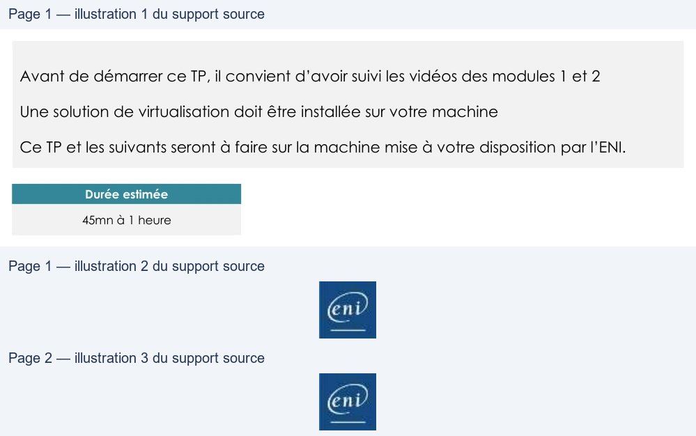

Transcription du document du Drive TSSR. La mise en forme est adaptée au Web ; les compléments IA du portail sont présentés séparément.
Administration Debian GNU/Linux
TP du Module 02 – Installation d’une distribution Linux
Avant de démarrer ce TP, il convient d’avoir suivi les vidéos des modules 1 et 2
Une solution de virtualisation doit être installée sur votre machine
Ce TP et les suivants seront à faire sur la machine mise à votre disposition par l’ENI.
Durée estimée
45mn à 1 heure
I.
Récupérer l’image source d’installation
Copier localement le fichier debian-11.x.x-amd64-dvd.iso depuis le serveur de l’ENI.
(avec 11.x.x = la version disponible sur le serveur)
II.
Création de la machine virtuelle
Créer une nouvelle machine virtuelle avec les paramètres suivant :
- Interface réseau permettant l'accès au réseau de la salle (Bridged)
- Disque dur de 10 Go de taille dynamique
- 2048 Mo de mémoire vive
- Démarrer la machine virtuelle en mappant le fichier ISO comme CDROM.
III.
Installation de Debian
1) Choisir les options suivantes :
- Installer Debian en mode graphique (mode par défaut)
- Choix de la langue : French - Français
- Emplacement géographique : France
- Disposition du clavier : Français
- Nom de la machine : définir un nom
- Nom de domaine : ad.campus-eni.fr
- Utilisateurs :
• Indiquer un mot de passe pour le compte root
• Créer un utilisateur
Page 1/2
© ENI – Tous droits réservés
BE
Administration Debian GNU/Linux
•
2) Partitionner les disques :
- Méthode de partitionnement : Assisté - utiliser tout un disque avec LVM
- Disque à partitionner : sélectionner le disque SCSI
- Schéma de partitionnement : Partitions /home, /var et /tmp séparées
3) Configurer l'outil de gestion des paquets :
- Analyser un autre CD ou DVD : Non
- PAS D’UTILISATION DES MIROIRS
- Popularity contest : Non
4) Choisir et installer des logiciels :
- Logiciels à installer : sélectionner
• serveur SSH
• utilitaires usuels du système
•
5) Installer le programme de démarrage GRUB :
- Installer le programme : Oui
- Périphérique où sera installé le programme : /dev/sda
Terminer l'installation
Redémarrer
Une solution est proposée pour ce TP sous la forme d'un PDF commenté, disponible dans les
ressources à télécharger.
Page 2/2
© ENI – Tous droits réservés
